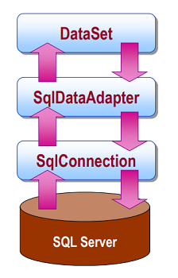

ADO.NET adatelérés¶
Mi is az az ADO.NET?¶
Adatvezérelt alkalmazásokban fontos, hogy az adatelérési réteg kényelmes, egyszerű metodikákat biztosítson az adatbázissal való kommunikációra, összetett lekérdezések könnyebb megfogalmazására, mindezt magától az adatbázismotortól minél függetlenebbül.
A Microsoft által fejlesztett ADO.NET (ActiveX Data Object) egy adatelérési osztálykönyvtár, mely pont ezeket az igényeket hivatott kielégíteni. A .NET részeként gazdag eszköztárat szolgáltat adatvezérelt alkalmazások készítéséhez, egyszerű hozzáférést biztosítva az alkalmazásból relációs adatbázisokhoz, függetlenül az adatbázis konkrét példányától és típusától.
Az ADO.NET mindezek mellett azért erős eszköz, mert egységes, adatbázismotor-független kódolást tesz lehetővé. A könyvtár interfészeket és absztrakt osztályokat tartalmaz, amiknek többféle implementációja (pl. Microsoft SQL Server-hez, vagy OleDB-hez) létezik. Ezen implementációk megvalósítják az alap funkciókat, de ki is bővíthetik azokat.
Az Entity Framework is a háttérben ADO.NET-re épül.
Az ADO.NET osztálykönyvtár elhelyezkedése az adatvezérelt alkalmazás struktúrájában:

Az ADO.NET tehát az adatelérési rétegben nyújt szolgáltatásokat, és a háttérben kezeli az adatbázismotor kommunikációt a rendszerre telepített driverek és az operációs rendszer szolgáltatásainak (pl. hálózati kapcsolat) igénybevételével.
Az adatelérési könyvtárak tipikus elemei:
- Connection - adatbázis meghajtók, maga a kapcsolat
- Command - paraméter-biztos utasítás
- ResultSet - eredmény halmaz
- Exception - kivételek, melyek a lekérdezések, végrehajtások során dobódhatnak
Az elemeket a következő fejezetekben részletesebben is tárgyaljuk.
Connection¶
Az ADO.NET könyvtár az IDbConnection interfészt biztosítja adatbázis kapcsolatok reprezentálására. Ebben találhatóak azok a függvények, amik szükségesek valamilyen adatbázissal való kapcsolat létrehozásához, mint például az Open(), a Close(), vagy a BeginTransaction(). Ezt az interfészt implementálják az adatbázismotor-specifikus kapcsolatok, mint például az SqlConnection, amely a Microsoft SQL Server felé történő kapcsolatot valósítja meg.
Az adatbázissal történő kapcsolat felépítéséről tudunk kell, hogy relatíve költséges (új hálózati kapcsolatot kell nyitni, egyeztetni a szerverrel a protokollokat, bejelentkezni, stb.). Ezért használjuk a connection pooling-ot, ahol is egy kapcsolat létrehozása, használása, majd bezárása után a kapcsolatot nem eldobjuk, hanem egy gyűjtőbe, egy "pool"-ba helyezzük vissza, hogy később újra fel tudjuk használni, ha az adatbázishoz szeretnénk szólni.
A connection pool elérhetősége implementációfüggő, de az MS SQL Server és OleDD implementációk is automatikusan támogatják. A connection pool-ok connection string-enként jönnek létre (tehát nem adatbázisonként). Ennek akkor van jelentősége, ha az alkalmazás nem egy connection string-et használ (hanem pl. felhasználónként külön-külön kapcsolódik a felhasználó nevében).
Ezen kontextushoz tartozik még a connection leak fogalma is, ami azt jelenti, hogy egy kapcsolatot használat után nyitva hagyunk (nem hívunk Close()-t), ezáltal az nem kerül vissza a pool-ba, és nem tudjuk újrafelhasználni. Amennyiben nem figyelünk erre, akkor hamar elfogynak a felhasználható kapcsolatok (a pool kiürül), aminek hatására az egész alkalmazásunk használhatatlanná válik, lévén, hogy nem tud az adatbázissal kommunikálni.
Az adatbázissal való kapcsolat létrehozásához szükségünk van egy az előbb említett connection string-re. Ez a szöveges változó írja le, hogy milyen paraméterekkel szeretnénk az adatbázishoz csatlakozni! Ilyen például a felhasználónév, jelszó, vagy éppen a szerver címe! A connection string-eknek adatbázis szerver típusonként eltérő szintaktikájuk lehet, és veszélyforrásokat is rejthetnek magukban.
A connection string tárolható konfigurációs fájlban szövegesen, avagy az alkalmazás kódja is össze tudja állítani. Példa kapcsolat létrehozására és a ConnectionStringBuilder használatára:
var builder = new SqlConnectionStringBuilder();
builder.UserID = "User";
builder.Password = "Pw";
builder.DataSource = "database.server.hu";
builder.InitialCatalog = "Adatvez";
var conn = new SqlConnection(builder.ConnectionString);
// connectionstring jöhet konfigurációs fájlból is
conn.Open();
... // lekérdezések, eljárások végrehajtása
conn.Close(); // nem felejtjük el bezárni - jobb megoldást lásd később
Command¶
Az adatbázis kapcsolat létrehozása után szeretnénk az adatbázissal kommunikálni, lekérdezéseket, eljárásokat futtatni. Ehhez az ADO.NET az IDbCommand interfészt biztosítja, ami egy utasítást reprezentál. A kapcsolathoz hasonlóan az interfészt specifikus osztályok valósítják meg, mint amilyen az SqlCommand az MSSQL szerverhez.
Előkészítés¶
Az IDbCommand alábbi főbb property-jeit beállítva tudjuk megmondani, hogy a megadott parancs, hogyan legyen értelmezve, és miként viselkedjen az utasítás:
CommandType: háromféle lehet- Tárolt eljárás (StoredProcedure)
- Tábla teljes tartalmához hozzáférés (TableDirect, nem minden implementáció használja, pl. OleDB igen)
- SQL query (Text) - alapértelmezett
CommandText: a parancs szövege, avagy tárolt eljárást neveConnection: az adatbázis kapcsolatTransaction: a tranzakcióCommandTimeout: parancs eredményére való várakozás maximális ideje (alapértelmezetten 30s)Parameters: paraméterek, az SQL injection támadás kivédéséhez
Figyeljük meg, hogy a parancsnak meg kell adnunk, milyen kapcsolaton keresztül tud lefutni. További a tranzakció is a parancs tulajdonsága, hiszen a fejlesztő feladata eldönteni, hogy egy adott parancsot egy tranzakció részének szán-e.
Végrehajtás¶
Miután előkészítettük a Command-ot, végre is hajthatjuk azt. Ehhez többféle lehetőség közül is választhatunk, attól függően, hogy mit várunk visszatérési értéknek.
ExecuteReader: több rekord lekérdezéseExecuteScalar: egyetlen skalár érték lekérdezéseExecuteNonQuery: olyan lekérdezés, amit nem eredményhalmazt ad vissza (pl.INSERT) - az érintett sorok számát adja vissza, pl. törlés esetén ebből dönthető el, hogy sikeres volt-e a művelet (megtalálta-e a törlendő rekordot)ExecuteXmlReader(MS SQL Server): XML dokumentumot (XmlReaderobjektum) ad vissza, az eredmény egy rekord egyetlen XML oszlopa
Parancsokat újrafelhasználni is tudunk, a Command.Prepare() (szerver oldalon előkészíti a parancs futtatását) hívás után, ám ez csak akkor éri meg, ha elegendően sokszor futtatjuk az utasítást (esetleg más-más paraméterekkel), mivel az előkészítés és előkészülten tartás idő- és erőforrásigényes.
Példa parancs használatára:
// kapcsolatot létrehozása, megnyitása
...
var command = new SqlCommand();
command.Connection = connection;
// a command.Connection beállítás nem szükséges, ha a connection-ön
// hozzuk létre a parancsot: command = connection.CreateCommand()
command.CommandType = CommandType.StoredProcedure;
command.CommandText = "SalesByCategory"; // tárolt eljárás neve
/* egyenértékű, de "C#-osabb" szintaxis:
var command = new SqlCommand()
{
Connection = connection,
CommandType = CommandType.StoredProcedure,
CommandText = "SalesByCategory"
}*/
// SQL injection elleni védelem
var parameter = new SqlParameter();
parameter.ParameterName = "@CategoryName"; // ilyen néven kerül bele a lekérdezésbe
parameter.SqlDbType = SqlDbType.NVarChar;
parameter.Value = categoryName; // C# változó értéke
command.Parameters.Add(parameter);
var reader = command.ExecuteReader();
// ennek feldoglozását lásd később
Tranzakciók¶
Tranzakciókat ADO.NET-ben nem a begin tran SQL utasítással kell kezdeményezni. Az ADO.NET objektumokat biztosít a tranzakció indítására és kezelésére, erre az alábbi kódrészlet mutat példát. Figyeljük meg a using blokkok használatát is az erőforrások megfelelő és biztonságos lezárása érdekében.
// Connection string megalkotása
...
using (var connection = new SqlConnection(connectionString))
{
connection.Open(); // ne felejtsük, a new nem nyitja meg a kapcsolatot
var transaction = connection.BeginTransaction();
// paraméter az induló tranzakció neve és/vagy az izolációs szint
var command = new SqlCommand()
{
Connection = connection,
CommandText = "INSERT into CarTable (Description) VALUES('...')",
Transaction = transaction
}
try
{
command.ExecuteNonQuery();
// a sikeres tranzakciós kommitolni KELL
transaction.Commit();
Console.WriteLine("Sikeres tranzakció!");
}
catch(Exception commitException)
{
Console.WriteLine("Commit Exception: ", commitException.ToString());
// A rollback nem feltétlenül szükséges, a rendszer automatikusan elvégzi
// a nem kommitált tranzakción. Az alábbi szemléltető példa csupán.
try
{
transaction.RollBack();
}
catch(Exception rollBackException)
{
Console.WriteLine("Rollback Exception: ", rollBackException.ToString());
}
}
}
Trankakció timeout
Minden ADO.NET tranzakció futási ideje limitálva van a MachineConfig-ban rögzített időintervallummal. Ez egy olyan rendszerszintű beállítás, amely minden, a rendszeren futó .NET alkalmazásra érvényes, ezért az értékét nem célszerű állítani. A hosszan futó tranzakciók egyébként is problémásak, ezért kerüljük használatukat.
Egy tranzakció általában egy Connection objektumhoz tartozik, de készíthető olyan tranzakció is, melyben több perzisztens erőforráskezelő (más adatbázisok, üzenetsorok, bármi, ami támogat tranzakciókat) is érintett lehet. Innentől elosztott tranzakciókezelésről beszélünk, amihez valamiféle külső tranzakciókezelő, mint például Microsoft Distributed Transaction Coordinator (MS DTC) szükséges. Az ilyen esetek szintén kerülendők, hacsak nem komplex esetről és jól átgondolt rendszerről van szó.
NULL értékek¶
Honnan tudjuk meg, hogy a lekérdezésünk eredménye üres halmaz? És honnan tudjuk meg, hogy egy visszaadott eredmény halmaz valamely rekordjának oszlopában nem szerepel adat? .NET-ben a null értéket szoktuk vizsgálni, de egy adatbázis NULL eltérő értéket vehet fel az oszlop típusától (int, string, stb.) függően. Tehát, hogyan ellenőrizzük, hogy van-e érték a lekérdezés eredményében?
- Ha azt akarjuk megvizsgálni, hogy a lekérdezés eredményhalmaza tartalmaz-e rekordokat, akkor a
DataReader.HasRowsboolproperty-jének vizsgálatával tehetjük ezt meg. - Ha az eredményhalmaz adott oszlopának értékét szeretnénk vizsgálni:
reader["oszlopnev"].IsNull;vagyreader.IsDbNull(index). - Ha
NULLértéket akarunk manuálisan beszúrni egy új rekordba: pl.SqlString.NullvagyDBNull.Value.
A lekérdezés eredménye¶
Az ADO.NET kétféle módot is biztosít az adatok adatbázisból való olvasására: DataReader és DataSet. A két megoldás közti fő különbség a kapcsolat használatában és az adatokkal való bánásmódban van. Ennek megfelelően két modellt különböztetünk meg: kapcsolat alapút (DataReader) és kapcsolat nélkülit (DataSet). A kapcsolat alapú modellben a kapcsolat az adatbázissal végig fennmarad, miközben lekérdezéseket hajtunk végre, míg a kapcsolat nélküli modellben egy DataSet-en végzünk módosításokat és ezt szinkronizáljuk időnként az adatbázissal, de a kapcsolat csak a szinkronizáció idejére jön létre. Mindegyiknek megvannak a maga előnyei és hátrányai, amiket a következő részekben fogunk tárgyalni.
DataReader¶
Az adatok lekérdezéséhez egy kapcsolatra van szükségünk. A kapcsolat rövid fennálása alatt friss, aktuális adatok érkeznek az adatbázisból, amiket tipikusan valamilyen belső reprezentációvá alakítunk.
Feldolgozás lépései:
- kapcsolat megnyitása
- parancs futtatása az adatok lekérdezéséhez
- eredmény feldolgozása (tipikusan: üzleti logikai entitásokra átfordítás)
- reader lezárása
- kapcsolat lezárása
A DataReader kapcsolati lánc az adatbázisig:

Példa DataReader használatára:
using(var conn = new SqlConnection(connectionString))
{
var command = new SqlCommand()
{
Connection = conn,
CommandText = "SELECT ID, NAME FROM Product"
}
conn.Open();
using(var reader = command.ExecuteReader())
{
while(reader.Read())
{
Console.WriteLine("{0}\t{1}", reader["ID"], reader["Name"]);
// tipikusan üzleti logikai entitást készítünk, amit egy memóriabeli listához adunk
}
// a using miatt nem kell reader.Close()
}
// a using miatt nem kell conn.Close()
}
Pár dologra azért érdemes odafigyelni!
- A
reader["ID"]eredményeobjectlesz, nem string vagy int. Helyettesíthetőreader.Get***(lekérdezésben_az_oszlop_indexe)hívással, ahol is a típust (String,Int32, stb. is meg kell adnunk). - Ha nem kompatibilisek a típusok (pl. az adatbázisban
nvarcharés miint32-ként akarjuk olvasni), futás idejű hibát fogunk kapni. - Ha az adatbázisban valamelyik oszlopban
NULLérték van areader.Get***hívásra szintén futás idejű hibát kapunk. Helyette ellenőrizzük areader.IsDBNull(lekérdezésben_az_oszlop_indexe)segítségével, és ha eztrue, akkor használjuk a típusnak megfelelőnullértéket.
Előnyők
- az adatok mindenkor a legfrissebbek, hiszen frissen az adatbázisból kérdezzük le
- egyszerűbb konkurenciakezelés, mert mindig friss adatokkal dolgozunk
- kisebb memória igény (lásd majd a DataSet-et)
Hátrányok
- folyamatos hálózati kapcsolat, amíg műveleteket végzünk - ez tehát nem lehet hosszú idejű
- a kapcsolatok darabszámával rossz skálázhatóság - ezért kell rövid ideig használni a kapcsolatokat
DataSet¶
A DataSet egyfajta cache-nek, vagy memóriabeli adattárnak tekinthető. Egy adapter (pl. SqlDataAdapter) segítségével kéri le az adatbázisból az adatokat, és tárolja el őket, majd zárja a kapcsolatot az adatbázissal. Ezt követően ezen a DataSet-en tudunk módosításokat végezni, majd egy új kapcsolatban az adapter segítségével "visszatölteni" (update) azt az adatbázisba. Érdemes megjegyezni, hogy a lekérés és az update között eltelt idő alatt más módosíthatja ugyanazt az adatbázist, ezért is hátránya a DataSet-nek a konkurens hozzáférésekből adódó ütközés, és a már korábban a tranzakciókezelésnél megismert konkurens adathozzáférési problémák.
Feldolgozás lépései:
- kapcsolat megnyitása
DataSetfeltöltése az adatbázis egy részével- kapcsolat lezárása
DataSetfeldolgozása (pl. felhasználó felületen megjeleníteni, szerkeszteni) - ez hosszabb ideig is tarthat- kapcsolat megnyitása
- változtatások visszatöltése
- kapcsolat lezárása
Az adatelérés működése adapter-rel kapcsolat nélküli modellben az alábbi ábrán látható.

DataSet kapcsolati lánc az adatbázisig:

Példa DataSet használatára:
var dataSet = new DataSet();
var adapter = new SqlDataAdapter();
// kapcsolatot nyitunk, feltöltjük a DataSet-et az adatbázisból, majd zárjuk a kapcsolatot
using(var conn = new SqlConnection(connectionString))
{
adapter.SelectCommand = new SqlCommand("SELECT * FROM Product", conn);
conn.Open();
adapter.Fill(dataSet);
}
-------------------------------------------------------
// dolgozunk az adatokkal/adatokon
// tipikusan felhasználó felületen történik, ez itt szemléltető példa
foreach(var row in dataSet.Tables["Product"].Rows)
{
Console.WriteLine("{0}\t{1}", row["ID"], row["Name"]);
row["Name"] = "new value";
}
-------------------------------------------------------
// Tipikusan időben később, pl. egy "mentés" gomb hatására kezdődik
// Kapcsolatot nyitunk, update-eljük az adatbázist, majd zárjuk a kapcsolatot
using(var conn = new SqlConnection(connectionString))
{
conn.Open();
adapter.Update(dataSet);
//dataSet.AcceptChanges(); -- így csak a DataSet frissülne, az adatbázis nem
}
Érdemes megfigyelni, hogy az adapter csak a Command-on keresztül kommunikál az adatbázissal. Egy adapter több ilyen Command-ot is használhat, ezáltal több Connection-nel akár több adatbázison is dolgozhatunk ugyanazon DataSet-tel.
Előnyők
- nem szükséges folyamatos hálózati kapcsolat
Hátrányok
- ütközések lehetnek a visszamentés során
- a
DataSetadatai nem mindig a legfrissebbek - memóriát foglal - szerver oldalon ezért is nem használjuk
Veszélyforrások¶
SQL injection¶
Az SQL injection az a súlyos hiba, amikor úgy futtatunk egy lekérdezést, hogy a benne szereplő paraméterek értékét nem ellenőrizzük futtatás előtt. A paraméterek érkezhetnek kliens oldalról, felhasználó által kiválasztott, vagy megadott adatokkal. Ebből akkor származhat probléma, ha egy rosszindulatú felhasználó SQL parancsot ír egy olyan mezőbe, ahonnan mást várnánk. Például egy felhasználónevet várnánk, de helyette a Monkey92); DROP TABLE Users;-- érték érkezik. Ha ezt a szöveget befogadnánk és beillesztenénk az SQL utasításunkba, azzal a drop table-t is végrehajtanánk, ezzel törölve egy táblánkat. Ez kifejezetten súlyos hiba!
MEGOLDÁS
Paraméterek használata (lásd: Command rész parancs létrehozása példa).
Connection string¶
A connection string megalkotása nagyon hasonló hibát rejt magában, mint az SQL injection. Tegyük fel, hogy a felhasználótól kérünk valamiféle adatot (pl. felhasználónév, jelszó). Ilyenkor nem tudhatjuk, hogy pontosan mit fogunk kapni. A connection string kulcs-érték párokból áll és sok adatbázis last-wins elvet alkalmaz ezekre. Ez a gyakorlatban azt jelenti, hogy ha egy kulcsra több érték is meg van adva a string-ben, akkor az jut érvényre, ami később szerepel benne. Vagyis, ha a begépelt felhasználónév és jelszó után jön egy olyan kulcs-érték pár, ami már szerepelt a string-ben, akkor az új felülírja a régit, ez pedig nagy kockázatot rejt magában, hiszen egy rossz indulatú felhasználó így saját maga által megadott paramétereket injektálhat a connection stringbe.
MEGOLDÁS
ConnectionStringBuilder használata (lásd: Connection rész)
Connection leak¶
Amennyiben nem zárunk le minden Connection-t, ahányszor a lezáratlan kapcsolatot tartalmazó a kódrész végrehajtódik, annyiszor elhasználunk egy Connection-t a pool-ból, a végén pedig nem marad több, és az alkalmazásunk megakad. Ez azért alattomos hiba, mert "csak" az alkalmazás egy bizonyos ideig történő futása során fog jelentkezni - a fejlesztő gépén szinte soha. Az ilyen problémát nehéz felismerni.
MEGOLDÁS
using blokk használata a kapcsolat megnyitására, mert így a blokk végén midíg lezáródik a kapcsolat (lásd: Tranzakció rész példa, vagy DataReader, vagy DataSet)
A DataReader-t hasonlóan le kell zárni, és ugyanúgy használható rá a using is.